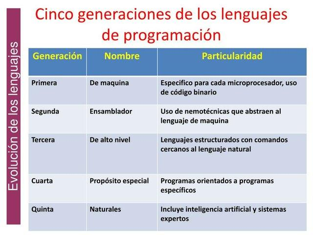

Lenguajes de programación
Se puede definir un lenguaje de programación como un lenguaje formal que especifica una serie de instrucciones para que una computadora produzca diversas respuestas. Un lenguaje de programación permite poner algoritmos en práctica, los cuales controlan el comportamiento físico y lógico de una computadora.
Todo lenguaje de programación se forma a partir de un conjunto de símbolos, llamado alfabeto, una serie de reglas léxico/morfológicas y sintácticas, y otras reglas semánticas, que componen todas las estructuras válidas en el lenguaje y su significado. La programación es el proceso de escribir, probar, depurar, compilar y mantener el código fuente de un programa informático.
Hoy en día, existen una gran cantidad de lenguajes de programación que emplean los programadores, como C++, C, C#, Java, Visual Basic, XML, HTML, Perl, PHP, JavaScript, etc. No obstante, aunque sean lenguajes más antiguos, todavía se utilizan profesionalmente los clásicos COBOL, FORTRAN, Pascal o el mítico BASIC.
Todos estos lenguajes de programación se denominan lenguajes de alto nivel y permiten a los profesionales resolver problemas convirtiendo sus algoritmos en programas escritos en alguno de estos lenguajes de programación.
Elementos de un lenguaje de programación
La práctica totalidad de los lenguajes de programación emplean los siguientes elementos:
-
Tipos de datos: para poder representar los datos de un programa, la mayoría de los lenguajes admite un conjunto de tipos de datos básicos, denominados tipos elementales, tales como números enteros, números reales, caracteres o booleanos. Además, cada lenguaje admite distintos tipos de datos complejos, como arrays, cadenas de caracteres, listas, registros y ficheros.
-
Variables: espacios de memoria donde almacenar información que puede ir variando con la ejecución o interpretación del programa. A cada uno de esos espacios de memoria reservados se les asigna un nombre, de forma que a través de dicho nombre se conoce la dirección de memoria a la que acceder a la información de la variable.
-
Estructuras de control y bucles: permiten ejecutar unas instrucciones u otras, en función de dichas condiciones, o bien ejecutar un conjunto de instrucciones un número determinado de veces.
-
Funciones y procedimientos: los lenguajes suelen permitir modularizar el código, es decir, separar las instrucciones en bloques independientes, de forma que se puedan reutilizar en distintas partes del código.
-
Comentarios: bloques de texto opcional añadido al código entre símbolos especiales, de forma que sirven a los programadores para documentar y explicar el código que realizan. Son ignorados por el ordenador a la hora de ejecutar o interpretar el programa.
Clasificación de los lenguajes de programación
Los lenguajes de programación se pueden clasificar atendiendo a distintos criterios: por niveles de lenguajes, por el paradigma que emplean, por el nicho de mercado o tipo de aplicaciones que abarcan, etc. A continuación veremos las clasificaciones más importantes.
Clasificación por generaciones
Así como los ordenadores y el hardware ha pasado por diferentes generaciones, podemos realizar una misma aproximación respecto a los lenguajes de programación. Estas generaciones no coinciden exactamente con las generaciones del hardware, aunque sí de forma aproximada. Existen los siguientes lenguajes:
-
Lenguajes de primera generación: la primera generación consiste en la utilización del lenguaje máquina para comunicarse con el ordenador, mediante el sistema binario. Sus instrucciones ejercen un control directo sobre el hardware y están condicionados por la estructura física de las computadoras que lo soportan. No obstante, eran lenguajes muy complejos de programar dado que se comunicaban directamente con el hardware.
-
Lenguajes de segunda generación: la siguiente evolución de los lenguajes de programación simplificaba las instrucciones del lenguaje máquina, haciéndolas más legibles para los programadores. El lenguaje ensamblador, junto con macros que permitían declarar estructuras de datos y de control complejas, hizo que la comunicación con las máquinas fuera más fluida.
-
Lenguajes de tercera generación: comienzan a surgir los lenguajes de alto nivel, independientes de las máquinas, tales como C, Fortran o Ada. Gracias a ellos, el usuario podía solucionar los problemas o tareas de datos de forma más sencilla y rápida, consiguiendo un mayor rendimiento. Aparecen también las bibliotecas para facilitar la programación que permiten la reutilización de código.
-
Lenguajes de cuarta generación: la cuarta generación destaca por el paradigma de los lenguajes de programación orientados a objetos, como Java. Estos lenguajes permiten el acceso a bases de datos y la generación de componentes gráficos complejos. Con esta generación se consiguió una gran mejora en la productividad y una mejor comunicación del programador con las máquinas.
-
Lenguajes de quinta generación: se utilizan principalmente en la investigación de la inteligencia artificial. Python, Prolog, Lisp y R son los mejores ejemplos, lenguajes que ofrecen gran productividad y una mejor comunicación del programador con las máquinas.
Clasificación por nivel
El nivel de un lenguaje de programación alude a lo cercano o lejano que éste se encuentra del lenguaje humano. Cuanto más similar sea, más de alto nivel se considera. Por contra, si es más difícilmente comprensible por el ser humano, pero más asimilable por el ordenador, se entiende que es un lenguaje de bajo nivel. Existen tres niveles:
-
Lenguajes de alto nivel: los lenguajes de alto nivel, como se ha comentado, son aquellos cuya sintaxis y términos se asemejan más al lenguaje humano. La inmensa mayoría de los lenguajes de programación disponibles hoy en día pertenecen a esta categoría, por lo que podemos citar varios de ellos: Java, C#, PHP, Javascript, etc.
-
Lenguajes de medio nivel: englobaría aquellos lenguajes de programación que tienen características de alto nivel pero también poseen características de bajo nivel, en cuanto al acceso directo a determinados recursos hardware, y mecanismos de codificación algo más confusos para el ser humano, pero más fácilmente traducibles a lenguaje máquina. El lenguaje más representativo de esta categoría es el lenguaje C, aunque C++ también podría englobarse en este grupo.
-
Lenguajes de bajo nivel: los lenguajes de bajo nivel disponen de un conjunto de instrucciones sencillas de traducir a lenguaje máquina, pero más difícilmente comprensibles por el ser humano. En este grupo se englobarían los lenguajes de programación en ensamblador, para las diferentes arquitecturas disponibles, como la 8086.

Clasificación por paradigma
Un paradigma de programación establece una serie de pautas para escribir el código a la hora de realizar un programa. De esta forma, se "obliga" a la comunidad a ajustarse a esta serie de normas, y el código resulta mucho más estándar, legible y mantenible.
-
Lenguajes imperativos: la programación imperativa se define como un modelado de la realidad por medio de representaciones de la información y de un conjunto de acciones a realizar. Orden de las acciones en el tiempo. También podemos decir que es una representación simbólica de una posición de memoria que cambia de valor. Los lenguajes imperativos son lenguajes controlados por mandatos u orientados a instrucciones. La instrucción básica del paradigma imperativo es la asignación.
-
Lenguajes funcionales: la programación funcional se basa en el uso de las funciones matemáticas para producir mejores efectos y que sus resultados sean más eficientes. La función se define basándose en procedimientos y ésta puede ser recursiva. Un lenguaje funcional se compone de un grupo de funciones primitivas (predefinidas por el lenguaje), un grupo de formas funcionales (funciones que pueden ser combinadas para crear nuevas funciones), la operación de la aplicación (construcción de un mecanismo para aplicar una función a sus argumentos y producir un valor) y un grupo de datos objetos (miembros que permiten los grupos de dominio y rango).
-
Lenguajes lógicos: en la programación lógica, los programas se consideran como una serie de aserciones lógicas. De esta forma, el conocimiento se representa mediante reglas, tratándose de sistemas declarativos. Una representación declarativa es aquella en la que el conocimiento está especificado, pero en la que la manera en que dicho conocimiento debe ser usado no viene dado.
-
Lenguajes orientados a objetos: la programación orientada a objetos es, tal vez, el paradigma de programación más utilizado en el mundo. Al contrario que la programación procedimental, que enfatiza en los algoritmos, la POO enfatiza en los datos. La idea fundamental de los lenguajes orientados a objetos es combinar en una única unidad o módulo, tanto los datos como las funciones que operan sobre esos datos. Tal unidad se llama objeto.
Los datos de un objeto se conocen también como atributos o variables de instancia. Las funciones de un objeto se llaman funciones miembros en C++ o métodos, y son el único medio para acceder a sus datos. No se puede acceder a los datos directamente. Los datos son ocultos, de modo que están protegidos de alteraciones accidentales. Los datos y las funciones se dice que están encapsulados en una única entidad. El encapsulamiento de datos y la ocultación de los datos son términos clave en la descripción de lenguajes orientados a objetos.
-
Lenguajes dirigidos por eventos: la programación dirigida por eventos es un paradigma de programación en que la ejecución de los programas va determinada por los sucesos que ocurran en el sistema, definidos por el usuario o que ellos mismos provoquen.
Mientras en la programación secuencial (o estructurada) es el programador el que define cuál va a ser el flujo del programa, en la programación dirigida por eventos será el propio usuario el que dirija el flujo del programa. Aunque en la programación secuencial puede haber intervención de un agente externo al programa, estas intervenciones ocurrirán cuando el programador lo haya determinado, y no en cualquier momento como puede ser en el caso de la programación dirigida por eventos.
-
Lenguajes de guiones (scripting): el código fuente de un programa creado usando lenguajes de scripting es almacenado en un archivo de texto plano. Los scripts son casi siempre interpretados, pero no todo programa interpretado es considerado un script. El uso habitual de los guiones es realizar diversas tareas como combinar componentes, interactuar con el sistema operativo o con el usuario.
-
Lenguajes cuánticos: las computadoras cuánticas todavía son bastante básicas y la mayoría son utilizadas como intrigantes juguetes en los laboratorios de investigación avanzada. Esto podría cambiar gracias a los nuevos lenguajes de programación que algunos expertos han empezado a desarrollar.
El más reciente proviene de Microsoft, que ha presentado su nuevo lenguaje Q# junto a un conjunto de herramientas que ayudan a los desarrolladores a usarlo para crear software. Éste se suma a QCL y Quipper, los otros lenguajes de programación cuántica de alto nivel más conocidos.
Una de las peculiaridades de la computación cuántica es que tiene limitaciones que no existen en los lenguajes de programación clásicos. Por ejemplo, los programas cuánticos no pueden tener bucles que repitan una secuencia de instrucciones, sino que tienen que ejecutarse linealmente hasta su finalización. Para lidiar con estos problemas, Q# se combina con un par de lenguajes clásicos. Los desarrolladores sin experiencia cuántica pueden escribir así sus programas principales en lenguajes que ya conocen y luego usar un programa Q# cuando deseen involucrar el poder de procesamiento cuántico.